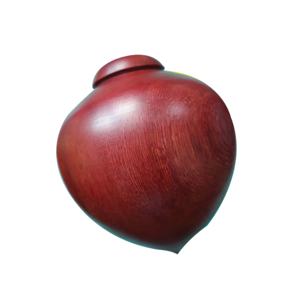
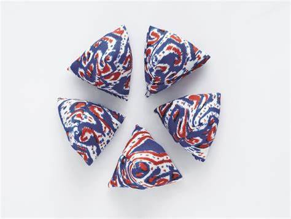
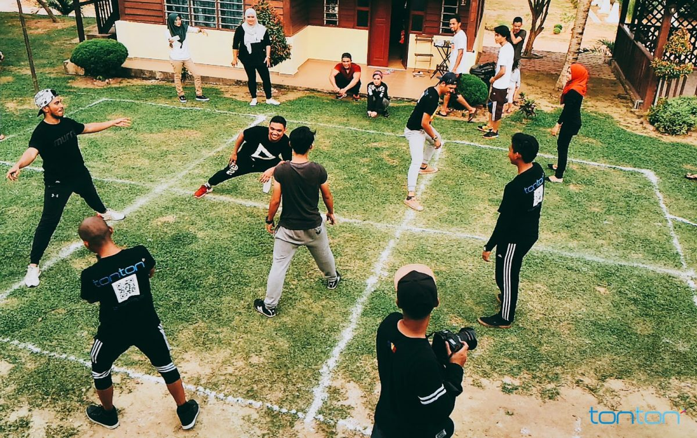
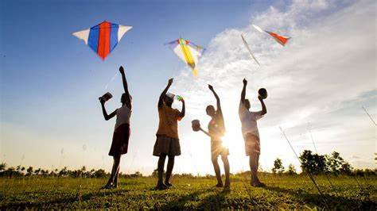
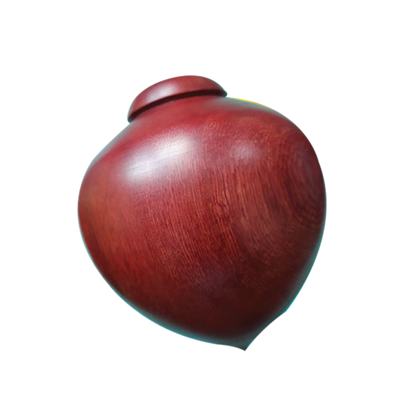
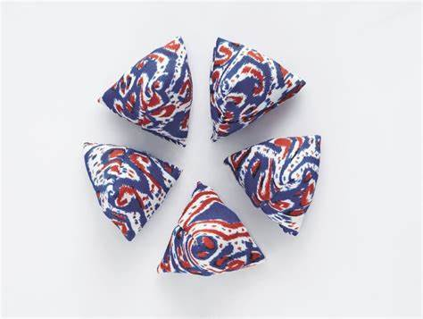
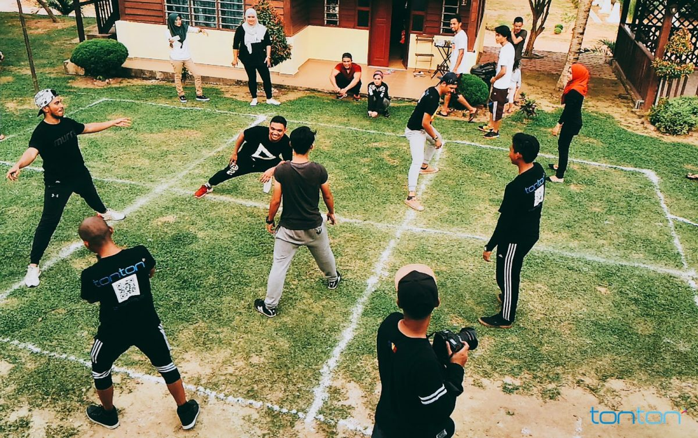
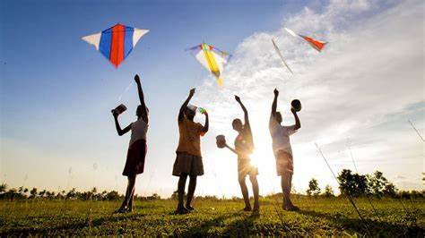

Malaysia mempunyai warisan permainan tradisional yang kaya dan bermakna. Permainan-permainan ini bukan sekadar hiburan, tetapi merupakan sebahagian daripada identiti budaya dan sejarah negara.
Enam permainan tradisional yang terkenal adalah:
- Congkak
- Sepak Takraw
- Gasing
- Batu Seremban
- Galah Panjang
- Main Layang-Layang
Permainan tradisional ini unik dan perlu dihargai kerana ia berbeza daripada permainan moden zaman ini. Setiap permainan mempunyai sejarah dan kepentingan tersendiri dalam budaya Malaysia.
Beberapa permainan seperti Congkak adalah permainan minda yang memerlukan strategi, Sepak Takraw menunjukkan kemahiran dan ketangkasan, Gasing mendemonstrasikan kepakaran dalam memusingkan dan mengekalkan putaran, Batu Seremban melatih koordinasi, Galah Panjang membangunkan kemahiran berkumpulan, dan Main Layang-Layang menggalakkan kreativiti.
 






